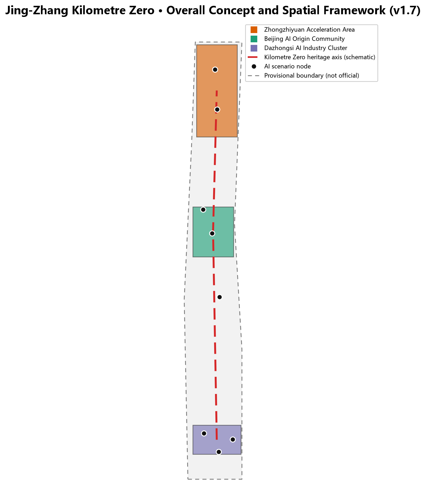
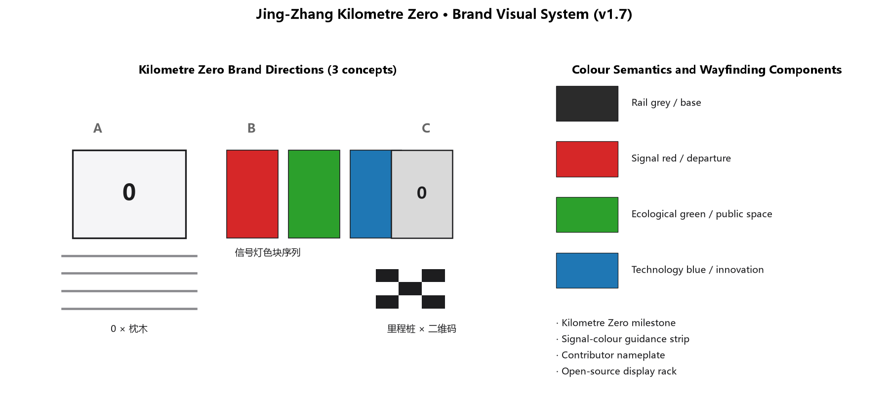
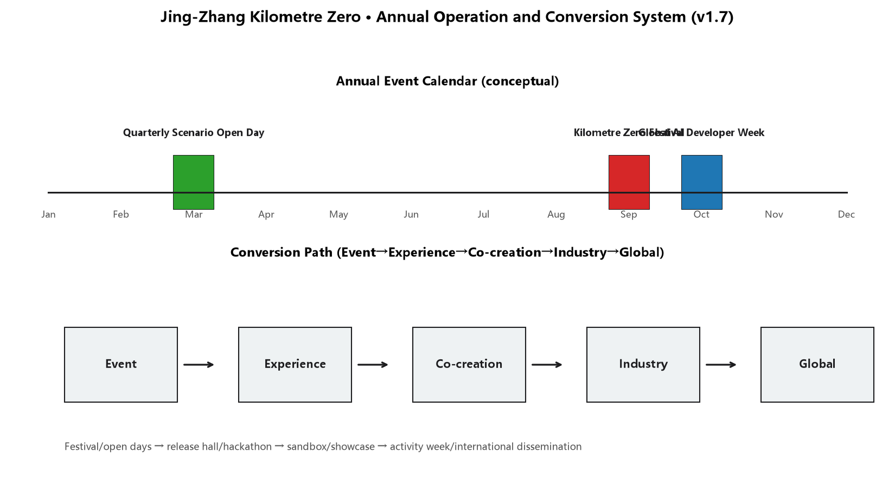
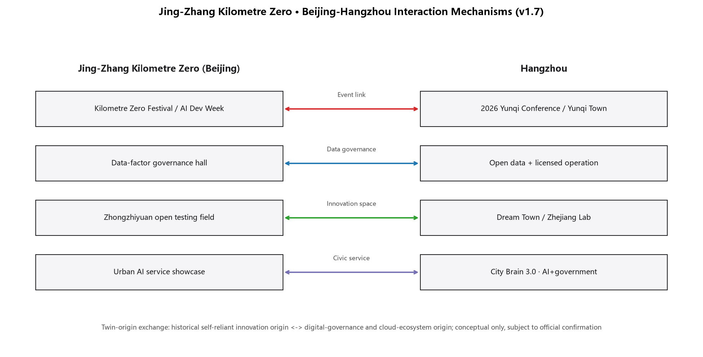
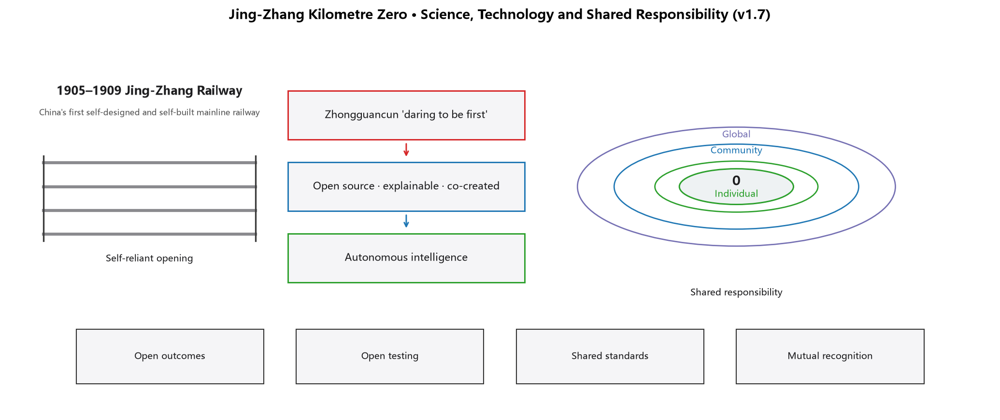

总览地图

Provisional boundary shown dashed; not an official redline. Full recalculation required after official data.
Three-Level Scope Framework
统筹研究范围 43.6 km²
时间线—创新链—公共空间带宏观模型
总体设计范围 11.4 km²
零公里主轴＋三处站点式核心区＋两翼支线
重点区域 368.4 ha
加速段 · 原点站 · 换乘站
Key Areas
zhongzhiyuan_ai_acceleration_area
zhongzhiyuan_ai_acceleration_area
beijing_ai_origin_community
beijing_ai_origin_community
dazhongsi_ai_industry_cluster
dazhongsi_ai_industry_cluster
Land-Use Zoning
12 个概念用地分区，全覆盖、无缝隙、无重叠 [source:SCENARIO-REGISTRY]
Transport and Slow Mobility
零公里慢行主轴
greenway
次级联系路 × 支路
secondary / branch
轨道接驳联络线
transit_connection
Blue-Green Public Space
绿地空间
17 个要素
公共空间
9 个要素
Buildings and Renewal
概念建筑基底
126 个要素 · 保留/改造/新建
分期范围
3 个阶段
Renewal Projects
| 编号 | 项目 | 分期 |
|---|---|---|
| JZ-01 | Heritage-park slow-mobility break repair | Near-term |
| JZ-02 | Kilometre Zero monument and wayfinding | Near-term |
| JZ-03 | Origin Station open-source release hall | Mid-term |
| JZ-04 | Acceleration Segment open testing field | Mid-term |
| JZ-05 | Interchange Station four-quadrant walking | Mid-term |
| JZ-06 | Global AI Activity Week system | Near-term start / long-term iteration |
AI Scenarios
Core Metrics
Site area
1,141.3 hapolygon_area(submitted_site_boundary, EPSG:4548)
Conceptual green ratio
33.6%green_space_area_sqm / site_area_sqm
Public-space ratio
17.4%public_space_area_sqm / site_area_sqm
Conceptual building footprint
56.4 hasum(polygon_area(building_footprints, EPSG:4548))
Conceptual road centreline
40,349.6 msum(line_length(road_centerlines, EPSG:4548))
AI scenario nodes
8count(SCENARIO_NODE features)
Floor area ratio (pending official control)
待确认Building height (pending official control)
待确认Building density (pending official control)
待确认Task Coverage
Overall concept and function coordination
已覆盖AI full-stack autonomous innovation ecosystem
已覆盖AI+ scenarios and vibrant city
已覆盖Public space and pilgrimage landmarks
已覆盖Jing-Zhang, Zhongguancun and AI cultural narrative
已覆盖Global events and long-term operation
已覆盖Self-Check Status
provisional boundary labelled; official redline pending
three key areas are provisional
land use covers boundary without gaps
offline static page
Sources
SITE-PACKAGE
brief/site-package/
Project brief, enums, allowed design space, ranges, and schemas.
SOURCE-REGISTRY
data/source_registry.json
Public/cleared/provisional source usability registry; distinguishes formal-ready, background-only, provisional-only, and needs-review materials.
PROCESSED-FACT-PACK
data/processed/agent_fact_pack.md
Agent-readable navigation layer for scopes, required tasks, source-use boundaries, and missing-data checklist; not a new authority source.
BOUNDARY-SOURCE
brief/site-package/geometry/provisional_boundaries.geojson
Submitted site boundary geometry source (provisional).
KEY-AREA-SOURCE
brief/site-package/geometry/provisional_boundaries.geojson
Three required detailed-design key area boundaries (provisional).
OFFICIAL-ANNOUNCEMENT
https://ghzrzyw.beijing.gov.cn/zhengwuxinxi/tzgg/hd/202605/t20260509_4643047.html
Official announcement tasks, scope levels, key areas, language, and deliverable context.
AGENT-TASKBOOK
brief/site-package/agent_taskbook.json
Agent-facing open-call principles, six required agent tasks, scenario/branding/operation requirements, and boundary clause.
SCENARIO-REGISTRY
scenarios/
Standard scenario registry used for scenario-card references and scenario metadata.
CASE-KINGS-CROSS
https://www.kingscross.co.uk/
Background case: King's Cross railway heritage regeneration into an innovation quarter with public space first. Mechanism reference only; not formal evidence.
CASE-KENDALL-SQUARE
https://capitalprojects.mit.edu/projects/kendall-square
Background case: Kendall Square university-industry-street ecosystem. Mechanism reference only; not formal evidence.
CASE-ONE-NORTH
https://en.wikipedia.org/wiki/One-north
Background case: Singapore one-north research-industry-liveable district. Background-only; verify with primary sources before formal reuse.
CASE-EINDHOVEN
https://www.hightechcampus.com/
Background case: High Tech Campus Eindhoven open campus and public living room. Mechanism reference only; not formal evidence.
CASE-YUNQI
https://www.yunqitown.com/
Background case: Yunqi Town annual-conference-driven AI ecosystem and scenario opening. Mechanism reference only; not formal evidence.
CASE-TOKYO
https://en.wikipedia.org/wiki/Marunouchi
Background case: Tokyo rail-hub districts combining innovation industry and public-space operation. Background-only; verify with primary sources before formal reuse.
CASE-SEATTLE-SLU
https://en.wikipedia.org/wiki/South_Lake_Union,_Seattle
Background case: South Lake Union's university-hospital-industry ecosystem and street-level public realm. Background-only; verify with primary sources before formal reuse.
CASE-SEOUL-DMC
https://en.wikipedia.org/wiki/Digital_Media_City
Background case: Seoul Digital Media City's media/ICT cluster and event-driven district operation. Background-only; verify with primary sources before formal reuse.
CASE-2026-YUNQI-CONFERENCE
https://yunqi.aliyun.com/
Background case: 2026 Yunqi Conference (22-24 September, Hangzhou; theme 'Intelligence in Practice') as an event-link mechanism reference for the Beijing-Hangzhou interaction narrative. Background-only; dates and theme subject to the final official announcement.
CASE-HANGZHOU-CITY-BRAIN
https://www.hangzhou.gov.cn/
Background case: Hangzhou City Brain 3.0 and the AI+government-service paradigm (including open-data catalogue, licensed operation and sandbox regulation) as mechanism references. Background-only; numeric claims pending verification against the official platform.
CASE-ZHEJIANG-LAB
https://www.zhejianglab.com/
Background case: Zhejiang Lab's mixed-ownership research-institution collaboration model. Mechanism reference only; not formal evidence.
CASE-DREAM-TOWN
https://cxkc.hangzhou.gov.cn/
Background case: Dream Town's 'core with no walls' open innovation-town model. Mechanism reference only; not formal evidence.
CASE-JINGZHANG-RAILWAY
https://zh.wikipedia.org/wiki/%E4%BA%AC%E5%BC%A0%E9%93%81%E8%B7%AF
Background narrative: the Jing-Zhang Railway (1905-1909) as China's first self-designed and self-built mainline railway, the origin of self-reliant innovation. Background-only; verify with official historical archives before formal reuse.
CASE-UNESCO-AI-ETHICS
https://www.unesco.org/en/artificial-intelligence/recommendation-ethics
Background reference: UNESCO Recommendation on the Ethics of Artificial Intelligence for shared-responsibility and global-collaboration mechanism framing. Mechanism reference only; not formal evidence.
Assumptions
A-CONTROLS-001
Detailed regulatory controls, road redlines, ownership, municipal utilities, and engineering constraints must be confirmed from official attachments before statutory use.
pending_professional_confirmation
A-PROVISIONAL-001
The submitted site boundary and three key areas use the repository's provisional rough polygons (EPSG:4326 exchange, EPSG:4548 area check). They are not official redlines or precise area bases.
pending_official_data
A-CONCEPT-001
Land use, buildings, roads, green/public space, phases, AI service zones and scenario nodes are conceptual design layers generated from public provisional data for discussion, not current-condition surveys or statutory conclusions.
conceptual_suggestion
A-CASES-001
The six global case studies are background references for mechanism transfer only; they are not formal evidence and imply no commitment about any enterprise, investment or policy.
background_only
A-BILINGUAL-001
proposal.md (Chinese) and proposal.en.md (English) are equivalent standalone language versions of the same proposal under bilingual_contract_version 1.
declared
Brand Visuals and Annual Operation
Kilometre Zero Festival
Every September, Jing-Zhang opening commemorative week
Global AI Developer Week
Every October, open-source releases and hackathons
Quarterly Scenario Open Day
Bookable sandbox, enterprise service and delivery pilots


Hangzhou Interaction
Event link
Kilometre Zero Festival and the 2026 Yunqi Conference (22–24 Sep, Hangzhou) connect; October Global AI Developer Week enables joint releases and community recognition
Data governance
Drawing on Hangzhou's open data, licensed operation and sandbox regulation, the Origin Station hosts a data-factor governance hall based on minimisation, human review and reversibility
Innovation space
Learning from Dream Town's 'core with no walls' and Zhejiang Lab, Zhongzhiyuan adopts 'core campus + open testing field + scenarios beyond the boundary'
Civic service
Drawing on Hangzhou City Brain 3.0 and the AI+government-service paradigm, Dazhongsi offers an urban AI service showcase and drill (subject to local approvals)

All mechanisms are conceptual suggestions and background references; no government cooperation or investment commitment is implied. Hangzhou information is subject to official announcements and verification.
Science, Technology and Shared Responsibility
Trustworthy
Open-source achievement gallery and release hall display cleared outcomes only, with generation and review actors labelled
Explainable
Enterprise Copilot station and governance consultation desk retain a human answer path for key Q&A
Reversible
AI testing sandbox and low-speed delivery pilots can be stopped; safety officer on site; data used after authorisation
Public benefit first
Youth-friendly public space and barrier-free digital guide include older and disabled needs in design and review

From the first self-built mainline railway to autonomous intelligence and open-source co-creation, shared responsibility becomes experienceable mechanisms; all are conceptual suggestions with no new government commitment or international agreement implied.